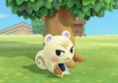
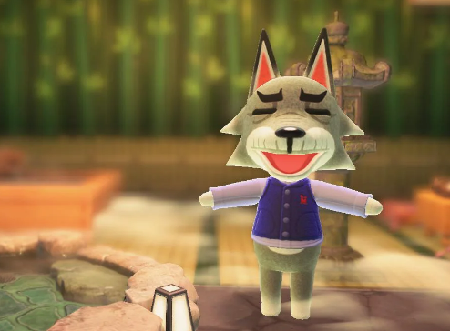

My Animal Crossing
Villagers:
Ranked
1. Marhsal:
The King of Side Eye

Marshal comes in at rank one because not only is he precious but his side eye is OUT OF CONTROL. The amount of sass recieved is uncharted while at the same time is undeniably cute.
2. Flurry: the sweetest lil snowflake

Flurry comes in at number 2. She is just too precious. Doesn't have a mean bone in her body. Loves sitting in random spots just enjoying life. We all need to be a little bit more like Flurry.
3. Barold: the misunderstood one

Barold takes a lot of heat in the online community for not being a good villager. Is it his strange lips and 5 o clock shadow? I'm not sure, but I enjoy that Barold is 100% himself. We also both love a good animal print.
4. Dobie: The true crime detective

To be completely honest I didn't care too much for Dobie in the beginning. He just waltzed onto my island without asking and was always very rude. BUT when you enter his house, you notice he has CLEARLY been solving some sort of crime since 2020 which has been causing him a lot of stress. I appreciate his dedication to solving the puzzle, no matter how long it takes.